Basic Electronics and Mobile Repairing
Series Connection
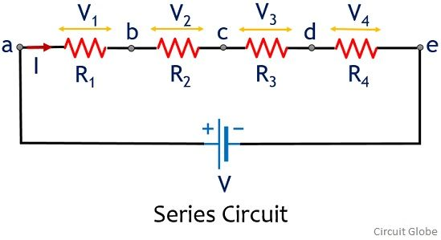
ఒక లోడు యొక్క అవుట్ పుట్ ని మరొక లోడుకు ఇన్పుట్ గా ఇవ్వడాన్ని సిరీస్ కనెక్షన్ అంటారు
సిరీస్ కనెక్షన్ లో ఏదైనా లోడ్ ఓపెన్ అయినప్పుడు ఓపెన్ అయిన లోడు తో పాటు మిగిలినవి కూడా పనిచేయవు
సిరీస్ కనెక్షన్ లో ఏదైనా లోడ్ డైరెక్ట్ అయినట్లయితే డైరెక్ట్ అయిన లోడు తప్ప మిగతా లోడ్స్ బాగానే
పనిచేస్తాయి
parlor Connection
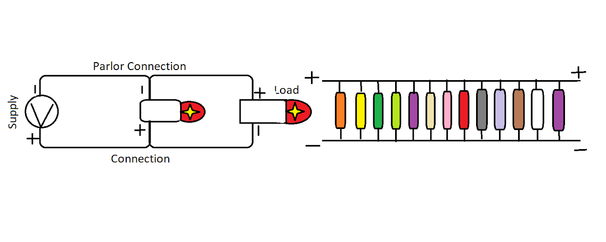
ఉన్న సప్లై ను లోడ్స్ అన్నిటికీ సమానంగా ఇచ్చినట్లయితే దానిని పార్లర్ కనెక్షన్ అంటారు
పార్లర్ కనెక్షన్ లో ఏదైనా లోడ్ ఓపెన్ అయినట్లయితే ఓపెన్ అయిన లోడ్ తప్ప మిగతా లోడ్స్ నార్మల్ గానే పనిచేస్తాయి
పార్లర్ కనెక్షన్ లో ఏదైనా లోడు డైరెక్ట్ అయ్యి షాట్ అయినట్లయితే షార్ట్ అయినా లోటుకు పార్లర్ గా ఉన్న కాంపోనెంట్స్ అన్ని షాట్ చూపిస్తాయి
పార్లర్ సర్క్యూట్ లో సప్లై వద్ద షార్ట్ వచ్చినప్పుడు దానికి పార్లర్ గా ఉన్న కాంపోనెంట్స్ ను ఒక్కొక్క దానిని రిమూవ్ చేస్తూ షార్ట్ చెక్ చేసుకోవాలి
ఏదో ఒక కాంపోనెంట్ ను రిమూవ్ చేసినప్పుడు షార్ట్ రిలీజ్ అవుతుంది
ఏదైతే కాంపోనెంట్స్ ను రిమూవ్ చేస్తారో అదే మరొక కాంపోనెంట్ తో రీప్లేస్ చేయాలి
కాంపోనెంట్ ను రిప్లై చేసేటప్పుడు పులారిటీ (+ మరియు -) చెక్ చేసుకుని వేయాలి
Fuse
ఫ్యూజ్ ను ప్రొటెక్షన్ సర్క్యూట్ గా ఉపయోగిస్తారు
సప్లై నుండి లోడుకు మధ్యలో సిరీస్ లో కనెక్ట్ చేస్తారు
ఫ్యుజ్ ఓపెన్ మాత్రమే అవుతుంది
సప్లై నుండి ఫ్యూజ్ ను పార్లర్ గా ఉపయోగించకూడదు
ఫ్యుజ్ ఓపెన్ అయినప్పుడు మరొక ఫ్యుజ్ తో గాని లేదా జంపర్ వైర్ తో గాని రీప్లేస్ చేయాలి
Switch
స్విచ్ ను ఆపరేట్ చేయడానికి ఉపయోగిస్తారు మరియు స్విచ్ ఆన్ మరియు ఆఫ్ అవుతుంది
స్విచ్ ఓపెన్ అయినప్పుడు లోడ్ ఆఫ్ కండిషన్లో ఉంటుంది
స్విచ్ డైరెక్ట్ అయినప్పుడు లోడ్ కంటిన్యూస్ గా పనిచేస్తూ ఉంటుంది లేదా లోడ్ ఆన్ మరియు ఆఫ్ అవుతూ
ఉంటుంది దీనిని రీస్టార్ట్ కంప్లైంట్ అంటారు
మొబైల్లో ఆన్ ఆఫ్ స్విచ్ లేదా బ్యాటరీ ద్వారా ఫోన్ రిస్టార్ట్ ప్రాబ్లం వస్తుంది
Resistor
ఎలక్ట్రాన్స్ ప్రవాహాన్ని అడ్డుకోవడానికి రెసిస్టర్ ను ఉపయోగిస్తారు. దీనిని 'R' అనే అక్షరంతో
పిలుస్తారు.
రెసిస్టర్ ను సప్లై నుండి లోడికి మధ్యలో సిరీస్లో కనెక్ట్ చేస్తారు.
రెసిస్టర్ తన ద్వారా ఎలక్ట్రాన్స్ ను ముందుకు పంపుతుంది కాబట్టి రెసిస్టర్ కొంత హిట్ అవుతుంది.
రెసిస్టర్ కు పోలారిటీ ఉండదు కాబట్టి ఎటు నుండి ఎటు అయినా కనెక్ట్ చేసుకోవచ్చు
రెసిస్టర్ ఓపెన్ మాత్రమే అవుతుంది డైరెక్ట్ అవ్వదు.
రెసిస్టర్ ఓపెన్ అయినప్పుడు రెసిస్టరు యొక్క వ్యాల్యూ ని తెలుసుకుని అదే వ్యాల్యూ కలిగిన మరొక
రెసిస్టరుతో రీప్లే చేయాలి
సెల్ఫోన్లో ఉపయోగించే రిజిస్టర్ లను 'SMD' రెసిస్టర్స్ అంటారు
సెల్ఫోన్ మదర్ బోర్డులో ఉపయోగించే కాంపోనెంట్స్ ను SMD కాంపోనెంట్స్ అంటారు ఇవి సైజులో తక్కువగా
ఉండి ఎక్కువగా పని చేస్తాయి
రెసిస్టర్ ను అవసరాన్ని బట్టి సిరీస్ లో కనెక్ట్ చేస్తారు
రిపేరబుల్
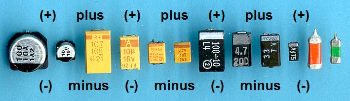
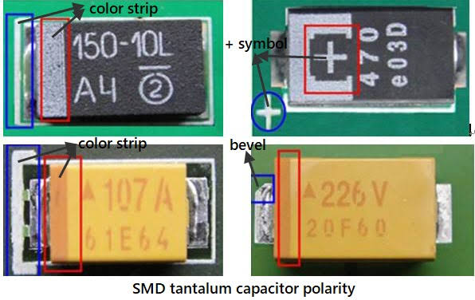
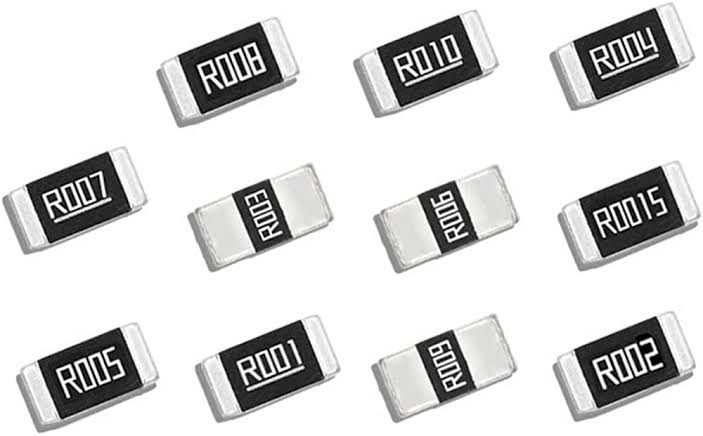
SMD రెసిస్టర్స్ రెండు రకాలు ఒకటి రెపరబుల్ రెండు నాన్ రిపేరబుల్
సెల్ఫోన్ పిసిబి లో వీటిని ఫ్యూజ్ కి బదులుగా ఉపయోగిస్తారు కాబట్టి వీటిని ఫ్యూజిబుల్
రెసిస్టెన్స్ అంటారు
ఈ రెసిస్టార్స్ ఓపెన్ అయినప్పుడు డైరెక్ట్ గా జంపర్ వైర్ వేసుకోవచ్చు
నాన్ రిపేరబుల్
ఈ రెసిస్టర్స్ కొంత వాల్యూ ని కలిగి ఉంటాయి కాబట్టి రెసిస్టర్స్ ఓపెన్ అయినప్పుడు అదే వ్యాల్యూ
కలిగిన రెసిస్టర్తో రీప్లేస్ చెయ్యాలి
ఈ రెసిస్టెన్స్ కి బదులుగా జంపర్ వైర్ వేయకూడదు
Conductors
ఎలక్ట్రాన్స్ తమగుండా ప్రభవింప చేసే వాటిని కండక్టర్స్ అంటారు ఉదాహరణ:- Wire, Iron, Gold, Water
Insulators
ఎలక్ట్రాన్స్ తమగుండ ప్రవహింప చెయ్యని వాటిని ఇండక్టర్స్ అంటారు ఉదాహరణ:- Wood, Plastic, Glass
రెండు కండక్టింగ్ ప్లేట్ల మధ్య ఇన్సులేటర్ ను ఉపయోగించినట్లయితే దానిని కెపాసిటర్ అంటారు
కెపాసిటర్ రెండు రకాలు ఒకటి పొలారిటీ కెపాసిటర్. రెండు నాన్ పొలారిటీ కెపాసిటర్
Polarity Capacitor
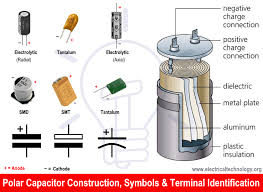
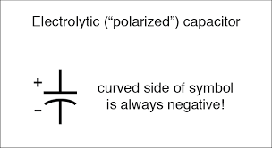
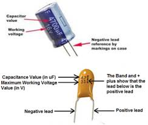
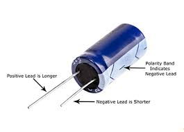
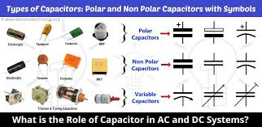
ఈ కెపాసిటర్ డిసి వోల్టేజ్ ను అడ్డుకొని స్టోర్ చేసుకుంటుంది ఏసీ వోల్టేజ్ ను ముందుకు
పంపిస్తుంది
పొలారిటీ కెపాసిటర్ ను సర్క్యూట్ లో ఉపయోగించేటప్పుడు పొలారిటీ(+ or -) ను చూసి కనెక్ట్
చేసుకోవాలి
కెపాసిటర్ ను సప్లై రివర్స్ గా కనెక్ట్ చేసినట్లయితే కెపాసిటర్ కాలిపోతుంది
Non Polarity Capacitor
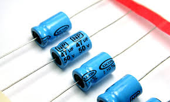
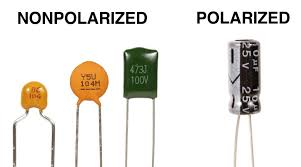
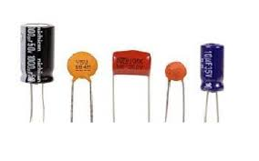
ఈ కెపాసిటర్ డిసి వోల్టేజ్ అడ్డుకుంటాయి కానీ స్టోర్ చేసుకోవు ఏసీ వోల్టేజ్ ను ముందుకు
పంపిస్తుంద
వీటిని సర్క్యూట్ లో ఉపయోగించేటప్పుడు ఎటు నుంచి ఎటు అయినా ఉపయోగించవచ్చు
సెల్ఫోన్ పిసిబి లో వీటిని ఎక్కువగా ఉపయోగిస్తారు
సర్క్యూట్ లో వీటిని డిసి వోల్టేజ్ ను అడ్డుకొని ఎలక్ట్రానిక్ సిగ్నల్స్ ను పంపించడానికి
వీటిని ఉపయోగిస్తారు
Ac Effect on Capacitor
పై సర్క్యూట్లో లోడ్ కావాల్సిన ఏసి వోల్టేజ్ ను కెపాసిటర్ ద్వారా ఇచ్చినప్పుడు.లోడ్ ఆన్
మరియు ఆఫ్ అవుతూ పనిచేస్తుంది
సప్లై నుండి మొదటి ఆఫ్ సర్కిల్ ముందుకు వెళ్ళినప్పుడు కెపాసిటర్ ఆ వోల్టేజ్ ను
అడ్డుకుంటుంది కాబట్టి లోడ్ పనిచేయదు
రెండవ ఆఫ్ సర్కిల్ కెపాసిటర్ కు వచ్చినప్పుడు కెపాసిటర్ లో స్టోర్ అయిన వోల్టేజ్ డిస్చార్జ్
అవుతూ లోడ్ పనిచేస్తుంది
కాబట్టి లోడ్ ఆన్ ఆఫ్ అవుతూ పని చేస్తుంది
Dc Effect on Capacitor
లోడ్ కు కావాల్సిన డిసి వోల్టేజ్ ను కెపాసిటర్ ద్వారా ఇచ్చినప్పుడు లోడ్ పనిచేయదు
డిసి వోల్టేజ్ కాన్స్టంట్ గా ఉంటుంది కాబట్టి కెపాసిటర్ వలన వోల్టేజ్ అక్కడే ఆఫ్ అయ్యి లోడ్
కు వెళ్లదు కాబట్టి లోడ్ పనిచేయదు
ఇండక్టర్ తో చేయబడిన వైర్ చుట్టూను ఇండక్టర్ లేదా కాయిల్ అని పిలుస్తారు దీనిని 'L' అనే
అక్షరంతో చూపిస్తారు
కోయిల్ కి వోల్టేజ్ ఇచ్చినప్పుడు దానిలో మ్యాగ్నెటిక్ ఫీల్డ్ ఏర్పడుతుంది.
కోయిల్ లో మాగ్నెటిక్ ఫీల్డ్ ఏర్పడటం వలన కాయిల్ నుండి వెళ్తున్న క్యారియర్
ఫ్రీక్వెన్సీలను అడ్డుకుంటుంది
కోయిల్ కి మనం ఇచ్చే సప్లై బట్టి దానిలో ఏర్పడే మ్యాగ్నెటిక్ ఫీల్డ్ కూడా మారుతూ ఉంటుంది
కాయిల్ ను సప్లై నుండి లోడికి మధ్యలో సిరీస్లో కనెక్ట్ చేస్తారు
సప్లై కు పార్లర్ గా కాయిల్ ని కనెక్ట్ చేయకూడదు
కోయిల్ ఓపెన్ మాత్రమే అవుతుంది సందర్భాన్ని బట్టి మరొక కోయిల్ తో గాని లేదా జంపర్ వైర్ తో
గాని రిప్లై చేస్తారు
Dc Effect on Coil
లోడుకు కావాల్సిన డిసి వోల్టేజ్ ను కోయిల్ ద్వారా ఇచ్చినప్పుడు కాయిల్ కాన్స్టెంట్
మ్యాగ్నెటిక్ ఫీల్డ్ ఏర్పడుతుంది
డిసి వోల్టేజ్ కాన్స్టంట్ గా ఉంటుంది కాబట్టి మ్యాగ్నెటిక్ ఫీల్డ్ కూడా కాన్స్టంట్ గా
ఉంటుంది.
లోడు నుండి సప్లై కి మధ్యలో కోయిల్ ని ఉపయోగించడం వలన సప్లై నుండి వస్తున్న క్యారియర్
ఫ్రీక్వెన్సీ లను అడ్డుకొని సప్లై ను మాత్రమే లోడుకు పంపుతుంది
కోయిల్ ఓపెన్ అయినప్పుడు జంపర్ వైర్ తో రిప్లై చేయవచ్చు
Ac Effect on Coil
లోడుకు కావాల్సిన ఏసీ వోల్టేజ్ ను కోయిల్ ద్వారా ఇచ్చినప్పుడు ఆ కాయిల్లో చేంజింగ్
మాగ్నెటిక్ ఫీల్డ్ ఏర్పడుతుంది
కోయిల్లో ఏర్పడిన చేంజింగ్ మ్యాగ్నెటిక్ ఫీల్డ్ కూడా క్యారియర్ ఫ్రీక్వెన్సీ లోనే
ఏర్పడుతుంది
కాయిల్ లో చేంజింగ్ మ్యాగ్నెటిక్ ఫీల్డ్ ఏర్పడినప్పుడు ఆ కాయిల్ దగ్గరలో ఎటువంటి
కనెక్షన్ లేకుండా మరొక కోయిల్ ఉంచినట్లయితే మొదటి కాయలు నుండి రెండవ కోయిల్ కు ఓల్టేజ్
ట్రాన్స్ఫర్ అవుతుంది
ఒక కోయిల్ నుండి మరొక కోయిల్ కు మధ్యలో ఎటువంటి కనెక్షన్ లేకుండా ఓల్టేజ్ ను
ట్రాన్స్ఫర్ చేస్తుంది కాబట్టి దీనిని ట్రాన్స్ఫార్మర్ అంటారు
ట్రాన్స్ఫార్మర్లో వోల్టేజ్ ఇచ్చే కాయిలను ప్రైమరీ అని వోల్టేజ్ తీసుకునే కాయిలు
సెకండరీ అని అంటారు
ట్రాన్స్ఫార్మర్లో ప్రైమరీకు ఏసీ 230 వాట్స్ ఇచ్చి సెకండ్రేలో మనకు వచ్చే వోల్టేజ్ ను
తీసుకుంటారు
ట్రాన్స్ఫార్మర్ లో వోల్టేజ్ తో పాటు దాని కెపాసిటీని కూడా కలిపి తీసుకుంటారు
ట్రాన్స్ఫార్మర్ ప్రైమరీ లో ఏసీ వోల్టేజ్ ఇచ్చినప్పుడు సెకండరీలో కూడా ఏసీ వోల్టేజ్
వస్తుంది
ట్రాన్స్ఫార్మర్ సెకండరీ లో వోల్టేజ్ ను తగ్గించి పంపుతుంది కానీ రూపం మార్చలేదు.
ట్రాన్స్ఫార్మర్ సెకండరీ లో కూడా ఏసీ వోల్టేజ్ వస్తుంది
ఈ ఏసీ వోల్టేజ్ ను డైరెక్ట్ గా మొబైల్ కు కనెక్ట్ చేయడం కుదరదు కాబట్టి సెకండ్ రీలో
వచ్చిన ఏసీ ను డిసి గా మార్చి అప్పుడు మొబైల్ కు కనెక్ట్ చేస్తారు
ఏసీ ను బీసీగా మార్చడానికి డయోడ్ ను ఉపయోగిస్తారు
Diode
పి ఎన్ జంక్షన్ ను డయోడ్ అంటారు దీనిని డి అనే అక్షరంతో పిలుస్తారు
డయోడ్ ఏసీ వోల్టేజ్ ను డీసీ గా మారుస్తుంది
డయోడ్ ఫార్వర్డ్ బయాస్ లో మాత్రమే వోల్టేజ్ ను ముందుకు పంపిస్తుంది రివర్స్ బయాస్
లో వోల్టేజ్ ను అడ్డుకుంటుంది
డయోడ్కు ఏసీ వోల్టేజ్ ఇచ్చినప్పుడు ఏసీ వోల్టేజ్ కాన్స్టంట్ కాదు కాబట్టి మొదటి ఆఫ్
సర్కిల్ పంపించినట్లయితే రెండవ ఆఫ్ సర్కిల్ వోల్టేజ్ ను అడ్డుకుంటుంది
దీనివలన డయోడ్ అవుట్ ఫుట్ లో డిసి వోల్టేజ్ వస్తుంది కానీ కాన్స్టెంట్గా రాదు
డయోడ్ తరువాత వచ్చిన డిసి వోల్టేజ్ ను ప్లాస్టేటింగ్ డిసి అంటారు
ఈ వోల్టేజ్ ను లోడ్ కు కనెక్ట్ చేసినట్లయితే లోడ్ ఆన్ ఆఫ్ అవుతూ పనిచేస్తుంది
కాబట్టి లోడ్ పాడయ్యే అవకాశం ఉంటుంది
డయోడ్ తరువాత ప్లాస్టేటింగ్ డిసి ను ప్యూర్ డీసీ గా మార్చి లోడ్ కు కనెక్ట్ చేయాలి
డిసిను ప్యూర్ డీసీగా మార్చడానికి డయోడ్ తర్వాత లోడ్ కన్నా ముందుగా పోలారిటీ
కెపాసిటర్ ను ఫార్వర్డ్ బయాస్ లో కనెక్ట్ చేసుకోవాలి
పై సర్క్యూట్ లో ట్రాన్స్ఫార్మర్ ఏసి వోల్టేజ్ ను తీసుకొని సెకండరీలో ఏసీ
వోల్టేజ్ ను తగ్గించి పంపుతుంది
ట్రాన్స్ఫార్మర్ సెకండరీ లో వచ్చిన ac వోల్టేజ్ ను డయోడ్ డీసీ గా మార్చి ముందుకు
పంపుతుంది
డయోడ్ ఏసీ ని డిసి గా మారుస్తుంది కానీ ప్యూర్ డి సి గా మార్చలేదు
డయోడ్ తరువాత వచ్చిన పులేటేటింగ్ డిసి ని పొలారిటీ కెపాసిటర్ ప్యూర్ డి సి గా
మార్చి లోడ్ కు పంపుతుంది కాబట్టి లోడ్ కంటిన్యూస్గా పనిచేస్తుంది
దీనినే ఎలిమినేటర్ అంటారు ఎలిమినేటర్ గా చార్జర్ ని ఉపయోగిస్తారు
Transistor
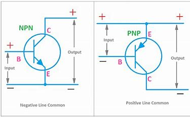
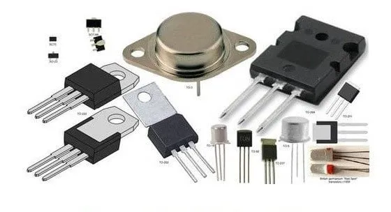
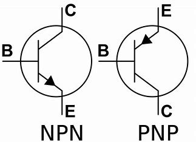
P/N జంక్షన్ కు P మెటీరియల్ తో గాని లేదా N మెటీరియల్ తో గాని కలిపినట్లయితే
దానిని ట్రాన్సిస్టర్ అంటారు
P/N జంక్షన్ కు P మెటీరియల్ ను కలిపితే PN ట్రాన్సిస్టర్ అని N మెటీరియల్ ని
కలిపితే NP ట్రాన్సిస్టర్ అని అంటారు
ట్రాన్సిస్టర్ను ఆమ్ప్లిఫైర్ గా ఉపయోగిస్తారు ఆమ్ప్లిఫైయర్కు ఇన్పుట్ లో
సిగ్నల్ ఇచ్చినట్లయితే ఆ సిగ్నల్ యొక్క స్ట్రెంత్ నో పెంచి అవుట్ ఫుట్ లో
పంపుతుంది
ఈ విధంగా సిగ్నల్ ను ఆమ్ప్లిఫైర్ చేయడానికి ఆమ్ప్లిఫైర్ కు సప్లై ఇస్తారు
ఒక యామ్ప్లిఫైయర్ ద్వారా సిగ్నల్ Strength సరిపోయినప్పుడు దాన్ని సిరీస్లో మరొక
ఆమ్ప్లిఫైర్ కనెక్ట్ చేసి సిగ్నల్ యొక్క Strengthను పెంచుతారు
ఈ విధంగా యామ్ప్లిఫైయర్ పెరిగే కొలది ప్లేస్ మరియు వెయిట్ పెరుగుతుంది కాబట్టి
వీటిని అన్నిటిని కలిపి ఒకే కాంపోనెంట్గా మార్చి ఇస్తారు దీనినే ఐసి అని
పిలుస్తారు
 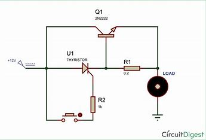
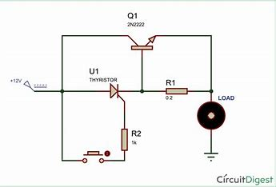
 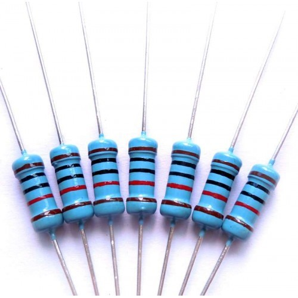
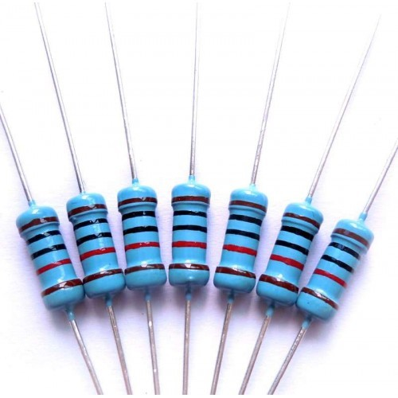
 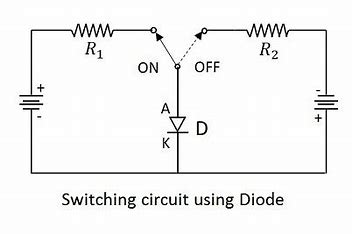
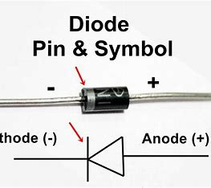
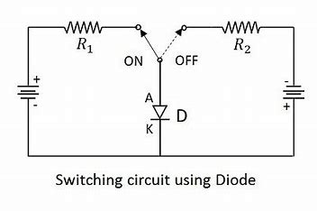
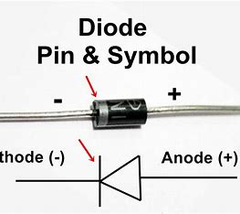